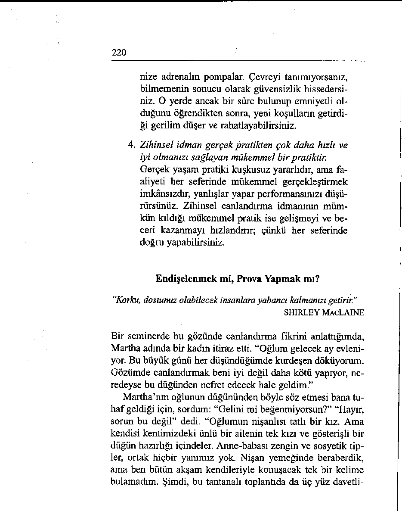
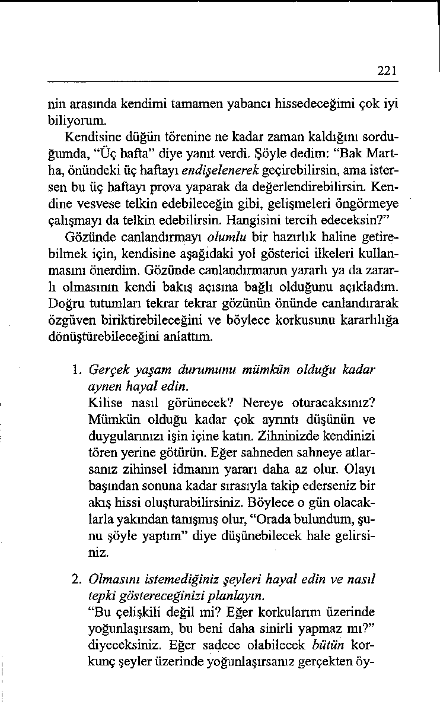
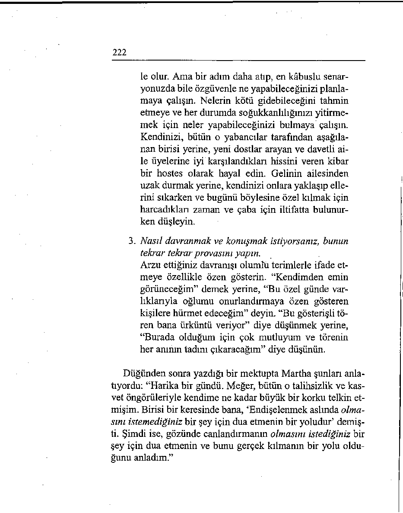
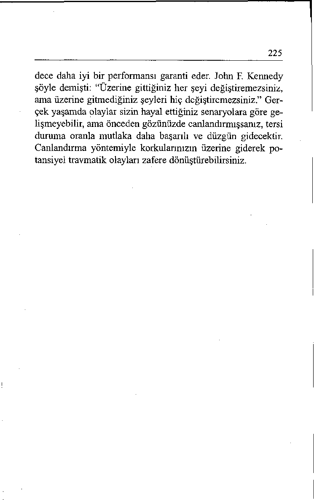

SÖZLER
GEREKEN SÖZLER
İçinizden kızarak satın almak
İhtiyaçlar terazisini hatırlayıp
istediklerinizi almaya zamanıkefeleri dengede tutmaya karar
nız kalmayacağını düşünürsüverirsiniz.
nüz.
“Jennifer, h a rik a g ö rü n ü y o r
“M e rh a b a Jennifer, g ö rü ş m e sun. G e le c e k h afta b ir s o h b e t
y e l i ç o k uzun za m a n oldu, d e ğ il
yü rü y ü şü için vaktin v a r m ı?
m i? ”
S en in le b irlik te o lm a yı ç o k ö z lem işim ."
Tersini tercih etmenize rağmen
Öncelikleriniz açık olduğu
birlikte bir fincan kahve içmeiçin, bir fincan kahve önerisini
yi kabul edersiniz.
diplomatça çevirirsiniz.
“Ç o k gü zel, b irlik te otu ru p b ir
“K a h v e iç m e k için za m a n ım
fin c a n k a h ve içm ek ç o k h oş
o lm a sın ı ç o k isterd im v e o ğ lu olur.”
m a b ir h e d iy e a lm a k için s a d e c e b ir sa a tim k a ld ı.”
Pişmanlık içinde saatinize ba Hem onun duygularına saygı
kar ve alışveriş merkezine bir
gösterip, hem de kendi ihtiyaçkere daha gelmeniz gerekecelarınızı dikkate alarak sohbete ğini düşünürsünüz.
ustaca son verirsiniz.
"B u ra ya b a şk a zam an b ir da h a
“G en e k a rş ıla ş tığ ım ız için ç o k
g e le c e ğ im h erh a ld e.”
sevin çliyim . Sen i m u tlaka a r a y a c a ğ ım .”
“Güç ve güveni hep kendi dışımda arardım, ama bunlar
insanın içinden gelir. Her zaman oradadırlar.”
- ANNA FREUD
Yirmi Dördüncü Bölüm
___
• •
___
Güven Duyun ve Oyle Davranın
insanların saygısını çekebilmek için etrafınıza nasıl güven sa-
çabileceğinizi bilmek ister misiniz?
Rehabilite olmuş birçok suçlu kullandıkları yöntemin, gözünü korkutmanın kolay olduğu çelimsiz görünen (omuzlan öne eğik, gözleri yere bakan, adımlannı çekine çekine atan) ve kolay lokma izlenimi veren insanlan avlamak olduğunu anlatmıştır. Buna karşılık kung fu ustalannm bizzat duruş ve yürüyüşü fiziksel saldırılan caydırıcı bir özgüven sergiler. Tongue Fu ustalan da bunun sözel benzerini izlemeli, konuşmalarını başkalannı her türlü hakaretten geri durmaya zorlayacak ama
gösterişe kaçmayan bir özgüvenle yürütmelidir.
217
Çökmek mi, Dikilmek mi?
“İnsan bir korkuya kapıldığında, bu bütün düşüncelerine sirayet
eder, kişiliğini zedeler, onu hayalete çevirir.”
- HENRY WARD BEECHER
Aşağıdaki beş saniyelik alıştırmayla korkuya kapılmakla kendinizi kuvvetli hissetmek arasındaki muazzam farkı keşfedebilirsiniz. “Zavallı” ile “gururlu” görünümünüz arasındaki farkı kendi gözlerinizle görebilmek için bir başkasından yardım isterseniz özellikle etkili olur.
Lütfen ayağa kalkın. Şimdi omuzlarınızı hafifçe öne eğip
aşağı sarkıtın, sonra göğsünüzü içinize çekin, başımzı indirip
yere bakın. Ayaklarınızı birbirine yaklaştırın ve “incir yapra ğı” konumuna geçin (ellerinizi önünüzde kavuşturun). Kendinizi ikircimli ve güvensiz hissetmiyor musunuz?
Şimdi de omuzlarınızı yukarı kaldırıp geri çekin (böylece
başınız da kendiliğinden yukarı kalkmış, duruşunuz düzgünleşmiş ve elleriniz yanlara gelmiş olacaktır). Bacaklarınızı biraz açarak ayaklarınızı bütün tabanıyla yere basın. Şimdi kendinizi daha güvenli ve emin hissetmiyor musunuz?
Beş Saniyede Özgüven Sağlama
"İnsan inançlarının eseridir. Nasıl inanıyorsa öyledir.”
- BHAGAVAD GITA
Beş Saniyede Özgüven Sağlama güven içinde davranarak kendinizi emin hissetmenizi sağlar. Canınız sıkkınsa muhtemelen kederli bir görünümünüz vardır. Bel kemiğiniz ve omurgalarınız bükük durur. Omuzlarınızı dikleştirip çenenizi kaldırarak ve ağırlığınızı ayaklarınız üzerinde dengeleyerek atletik bir görünüm almanız, sizi bezginlik ve endişeden kurtaracaktır.
Şimdi, kelimenin her iki anlamında da yukarıdan baktığınız
218
için, kendinizi anında daha iyimser hissedeceksiniz. Başınızı
dik tutarsanız, kendilerine kurban arayan akıl yağmacıları sizi
incitemeyecektir.
Beş Saniyede Özgüven Sağlamanın gerçek yaşamda harikalar yarattığını söyleyebilirim. Oğullarımız Tom ile Andrew, Maui’de sahneye konacak Peter Pan oyununda rol almak istiyorlardı. Gerekli formları hevesle doldurmuş sınav sıralarının gelmesini bekliyorlardı.
Çoğu oldukça başarılı görünen yirmi kişi dinlendikten sonra sıra Tom’a geldi. Sahneye çıktı ve şarkısını söylemeye başladı. ilk dörtlüğü okudu ama sonra birden susup kaldı, gerisini unutmuştu. Şarkının sonunu güç bela getirdikten sonra ıstırap içinde yerine gitti ve göz yaşlarını zorla tutarak çöküp kaldı.
Uğradığı başarısızlığı düşündükçe koltuğun içinde daha da
küçülüyordu. Ağlamak üzere olduğunu görerek, “Dik otur,
Tom” dedim. Kendisini yukarı çekti ve bütün tutumu değişti.
Yıkılmış bir görünümden güvenli bir duruşa geçti.
Eğer Tom fiziki duruşunu değiştirmesiydi, rezalet olarak
gördüğü şeyi düşünmeyi sürdürecek, gelecekte bir daha denemeye asla cesaret edemeyecekti. Bunun yerine, aynı gün ak şam, üstü kardeşiyle birlikte ikinci bir sınavın ne zaman açılabileceğini tartışıyorlardı.
Bir şeyi deneyip başaramadığınızda bu örneği düşünün.
Bezgin bir şekilde duruyorsanız, bedeninizin şeklini değiştirdiğinizde duygularınız da değişecektir. Beş Saniyede Özgüven Sağlamayı kullanarak asık suratlı ve üzgün bir görünümden mutlu ve ferah bir duruma geçebilirsiniz.
Her Şey Kafanızın İçindedir
“Tereddüt, itimadın kendisine kardeş olduğunu bilemeyecek kadar yalnızdır.”
- KAHLIL GIBRAN
219
Dizlerinizi titreten ve avuç içlerinizi terleten beklediğiniz
bir olay var mı? Eşinizin işyerindeki yılbaşı partisine siz de mi
katılacaksınız? Satranç turnuvası finallerinde klasmanda sizden daha yukarıda olan birisiyle mi karşılaşacaksınız? “Bu benim iş tarifimde yazmıyor” tutumu içinde olan bir işgörenle görüşmeniz mi gerekiyor?
Bu olayla paniklemiş bir halde değil de kendinizden emin
bir görünümde karşılaşmayı ister misiniz? Eğer gözünüzde
canlandırma teknikini kullanarak tereddütü kararlılığa dönüştürürseniz bunu başarabilirsiniz. Gözünüzde canlandırma herhangi bir alandaki performansınızı iyileştirmede yapabileceğiniz en etkili şeydir. Bu cesur bir iddia, değil mi? İnsan davranışına ilişkin aşağıdaki dört saptama, gözünüzde canlandırmanın niçin ve nasıl etkili olduğunu açıklamaktadır.
1. Özgüven aralıksız, sık ve başarılı pratike dayalıdır.
Bir şeyi iyi yaptığınızda ve bu başarıyı sık sık tekrarladığınızda yeni bir duruma kendinizden emin bir şekilde yaklaşmaz mısınız? Özgüven, kanıtlanmış bir yetkinliğe bağlı olarak, “Ben bunu yapabilirim” hissini taşımak değil midir?
2. Sinirlilik, kuşku ve endişeleriniz üzerinde yoğunlaşmanın bir sonucudur.
Eğer, “Bunu nasıl becereceğim? Ya bütün bu insanların önünde sesim soluğum kesilirse?” diye düşünüyorsanız, endişe dolu bir hale gelirsiniz. Sinirlilik, kaygılanmanın bir görünümüdür.
3. İnsanlar yabancısı oldukları durumlarda rahatsızlık hissederler.
Dövüş ya da kaç tepkisi içgüdüsel bir var kalma
mekanizmasıdır. Yabancısı olduğunuz bir ortamda,
kendinizi savunmanız ya da kaçabilmeniz için gerekli enerjiyi sağlamak üzere, vücudunuz sistemi 
220
nize adrenalin pompalar. Çevreyi tanımıyorsanız,
bilmemenin sonucu olarak güvensizlik hissedersiniz. O yerde ancak bir süre bulunup emniyetli olduğunu öğrendikten sonra, yeni koşulların getirdi ği gerilim düşer ve rahatlayabilirsiniz.
4. Zihinsel idman gerçek pratikten çok daha hızlı ve
iyi olmanızı sağlayan mükemmel bir pratiktir.
Gerçek yaşam pratiki kuşkusuz yararlıdır, ama faaliyeti her seferinde mükemmel gerçekleştirmek imkânsızdır, yanlışlar yapar performansınızı düşürürsünüz. Zihinsel canlandırma idmanının mümkün kıldığı mükemmel pratik ise gelişmeyi ve beceri kazanmayı hızlandırır; çünkü her seferinde doğru yapabilirsiniz.
Endişelenmek mi, Prova Yapmak mı?
‘‘Korku, dostunuz olabilecek insanlara yabancı kalmanızı getirir."
- SHIRLEY MACLAINE
Bir seminerde bu gözünde canlandırma fikrini anlattığımda,
Martha adında bir kadın itiraz etti. “Oğlum gelecek ay evleniyor. Bu büyük günü her düşündüğümde kurdeşen döküyorum.
Gözümde canlandırmak beni iyi değil daha kötü yapıyor, neredeyse bu düğünden nefret edecek hale geldim.”
Martha’nm oğlunun düğününden böyle söz etmesi bana tuhaf geldiği için, sordum: “Gelini mi beğenmiyorsun?” “Hayır, sorun bu değil” dedi. “Oğlumun nişanlısı tatlı bir kız. Ama kendisi kentimizdeki ünlü bir ailenin tek kızı ve gösterişli bir
düğün hazırlığı içindeler. Anne-babası zengin ve sosyetik tipler, ortak hiçbir yanımız yok. Nişan yemeğinde beraberdik, ama ben bütün akşam kendileriyle konuşacak tek bir kelime bulamadım. Şimdi, bu tantanalı toplantıda da üç yüz davetli 
221
nin arasında kendimi tamamen yabancı hissedeceğimi çok iyi
biliyorum.
Kendisine düğün törenine ne kadar zaman kaldığını sordu ğumda, “Üç hafta” diye yanıt verdi. Şöyle dedim: “Bak Martha, önündeki üç haftayı endişelenerek geçirebilirsin, ama istersen bu üç haftayı prova yaparak da değerlendirebilirsin. Kendine vesvese telkin edebileceğin gibi, gelişmeleri öngörmeye çalışmayı da telkin edebilirsin. Hangisini tercih edeceksin?”
Gözünde canlandırmayı olumlu bir hazırlık haline getirebilmek için, kendisine aşağıdaki yol gösterici ilkeleri kullanmasını önerdim. Gözünde canlandırmanın yararlı ya da zararlı olmasının kendi bakış açısına bağlı olduğunu açıkladım.
Doğru tutumları tekrar tekrar gözünün önünde canlandırarak
özgüven biriktirebileceğini ve böylece korkusunu kararlılığa
dönüştürebileceğini anlattım.
1. Gerçek yaşam durumunu mümkün olduğu kadar
aynen hayal edin.
Kilise nasıl görünecek? Nereye oturacaksınız?
Mümkün olduğu kadar çok ayrıntı düşünün ve
duygularınızı işin içine katın. Zihninizde kendinizi
tören yerine götürün. Eğer sahneden sahneye atlarsanız zihinsel idmanın yararı daha az olur. Olayı başından sonuna kadar sırasıyla takip ederseniz bir akış hissi oluşturabilirsiniz. Böylece o gün olacaklarla yakından tanışmış olur, “Orada bulundum, şunu şöyle yaptım” diye düşünebilecek hale gelirsiniz.
2. Olmasını istemediğiniz şeyleri hayal edin ve nasıl
tepki göstereceğinizi planlayın.
“Bu çelişkili değil mi? Eğer korkularım üzerinde
yoğunlaşırsam, bu beni daha sinirli yapmaz mı?”
diyeceksiniz. Eğer sadece olabilecek bütün korkunç şeyler üzerinde yoğunlaşırsanız gerçekten öy 
222
le olur. Ama bir adım daha atıp, en kâbuslu senaryonuzda bile özgüvenle ne yapabileceğinizi planlamaya çalışın. Nelerin kötü gidebileceğini tahmin etmeye ve her durumda soğukkanlılığınızı yitirmemek için neler yapabileceğinizi bulmaya çalışın.
Kendinizi, bütün o yabancılar tarafından aşağılanan birisi yerine, yeni dostlar arayan ve davetli aile üyelerine iyi karşılandıkları hissini veren kibar bir hostes olarak hayal edin. Gelinin ailesinden uzak durmak yerine, kendinizi onlara yaklaşıp ellerini sıkarken ve bugünü böylesine özel kılmak için harcadıkları zaman ve çaba için iltifatta bulunurken düşleyin.
3. Nasıl davranmak ve konuşmak istiyorsanız, bunun
tekrar tekrar provasını yapın.
Arzu ettiğiniz davranışı olumlu terimlerle ifade etmeye özellikle özen gösterin. “Kendimden emin görüneceğim” demek yerine, “Bu özel günde varlıklarıyla oğlumu onurlandırmaya özen gösteren kişilere hürmet edeceğim” deyin. “Bu gösterişli tören bana ürküntü veriyor” diye düşünmek yerine, “Burada olduğum için çok mutluyum ve törenin
her anının tadını çıkaracağım” diye düşünün.
Düğünden sonra yazdığı bir mektupta Martha şunları anlatıyordu: “Harika bir gündü. Meğer, bütün o talihsizlik ve kasvet öngörüleriyle kendime ne kadar büyük bir korku telkin etmişim. Birisi bir keresinde bana, ‘Endişelenmek aslında olmasını istemediğiniz bir şey için dua etmenin bir yoludur’ demişti. Şimdi ise, gözünde canlandırmanın olmasını istediğiniz bir şey için dua etmenin ve bunu gerçek kılmanın bir yolu oldu ğunu anladım.”
223
Aklmızdakileri Güvenle Söyleyin
“Konuşmanızı bir parça düzeltmezseniz talihinizi sakatlarsınız.”
- WILLIAM SHAKESPEARE
Shakespeare’in sözünü geliştirebileceğimi düşünecek kadar
haddimi bilmez değilim, ama konuşmanızı bir parça düzeltirseniz talihinizi de düzeltebileceğiniz fikrine katılmaz mısınız?
Güç, işleri yaptırtabilme yeteneğidir. Gücünüz, sözlerinizle
eğitme ve esinlendirme yeteneğinize bağlıdır. Etkili olmak istiyorsanız, kendinizi güvenle ifade etme sanat ve becerisinde ustalaşmanız önemlidir.
Ama birçok araştırma insanların çoğunun topluluk önünde
konuşmaktan ölümden daha çok korktuğunu göstermektedir.
Seminerlerimizden birinde bir katılımcı, “Böyle bir şey nasıl
olabilir?” diye sorduğunda, bir başkası atılıp öyle dedi: “Çok
basit, çünkü insan bir kere ölür.” Her yaştan ve her deneyim
düzeyinden çok değişik insanlar, topluluk önünde konuşma
düşüncesinin kendilerini felce uğrattığını itiraf etmektedir.
Önceki sayfalarda anlatılan üç canlandırma ilkesini kullanarak ve etki uyandırmaktan çok enforme etmeye çalışarak bu korkuyu aşabilir ve düşüncelerinizi ifade etmeyi öğrenebilirsiniz. Düşüncelerinizi kendiniz üzerinde yoğunlaştırırsanız (“Nasıl görünüyorum? Hakkımda ne düşünecekler?”), endişelenirsiniz. Eğer dikkatinizi dinleyicilere yöneltirseniz (“Bu zamanı onlar için en iyi şekilde nasıl değerlendirebilirim? Bu fikirlerden nasıl yararlanabilirler?”), endişeden kurtulursunuz.
Değer katma misyonu duygusu kaygılarınıza ağır basar.
Paniki Dengeye Dönüştürün
“Kısıtlılıklarınıza gerekçe bulmaya çalışırsanız, hiç kuşkunuz olmasın, kendi malınız haline geleceklerdir.’’
- RICHARD BACH
224
Aşağıdaki başarı öyküsü zihinsel provanın korkuyu nasıl
güce dönüştürdüğünün güzel bir örneğidir. Kevin’den meslek
örgütünün kongresine bir rapor sunması istenmişti. Büyük bir
korkuya kapıldığını itiraf ediyordu: “Hayatımda elli kişiden
büyük bir topluluğun önünde hiç konuşmadım ve kongreye
beş yüz kişinin katılması bekleniyor. Meslektaşlarımın önünde rezil olacağım endişesi beni bir türlü terk etmiyor.”
“Kevin” dedim kendisine, “kısıtlılıklarına ya gerekçe bulmaya çalışırsın ya da onları tasfiye etmeye çalışabilirsin. Gelecek on gün içinde her akşam şu beş dakikalık canlandırma alıştırmasını yapmayı bir dene. Akşam geç vakti tercih et ki başka yükümlülükler aklını meşgul etmesin. Sakince oturup
kongrenin yapılacağı salonu hayal et. Eğer daha önceden tanımadığın bir yerse, telefon edip salonu sana tarif etmelerini rica et.
“Seni dinleyicilere takdim ettiklerini ve kararlı ve enerjik
adımlarla kürsüye doğru yürüdüğünü hayal et. Kendini dinleyicilere bakıp gülümserken, salonun her bölümünden en az bir kişiyle göz teması kurarken düşün. Fikir ve görüşlerini dile getirmek üzere sana bu fırsatı verdikleri için kendilerine şükran duyduğunu düşün.
“Gözünde, herkesin dikkati senin üzerinde toplanmcaya
kadar sessizce beklediğini, sonra fikirlerini düzenli ve anlaşılır bir şekilde anlatmaya başladığını, sesini salonun en arkasına kadar ulaştırdığını canlandır. Dinleyicilere etkili bir şekilde seslendiğini ve sunuşundan bir şeyler almaları için çaba gösterdiğini düşün. Herkesi fikirlerini paylaşmaya esinlendiren bir eylem çağrısıyla sözlerine son verdiğini hayal et.”
Kongrenin ertesi gün beni aradığında, Kevin telefonda şunları anlattı: “İşe yaradı. Kendimi kürsüde o kadar rahat hissettim ki, sanki daha önce yüzlerce kez oraya çıkmış gibiydim.”
Aslında, gerçekten de daha önce yüzlerce kez o kürsüye çıkmıştı; zihninde!
Gözünde canlandırmak başarıyı garanti eder mi? Hayır, sa 
225
dece daha iyi bir performansı garanti eder. John F. Kennedy
şöyle demişti: “Üzerine gittiğiniz her şeyi değiştiremezsiniz,
ama üzerine gitmediğiniz şeyleri hiç değiştiremezsiniz.” Ger çek yaşamda olaylar sizin hayal ettiğiniz senaryolara göre gelişmeyebilir, ama önceden gözünüzde canlandırmışsanız, tersi duruma oranla mutlaka daha başarılı ve düzgün gidecektir.
Canlandırma yöntemiyle korkularınızın üzerine giderek potansiyel travmatik olayları zafere dönüştürebilirsiniz.
226
GÜVEN DUYMAK VE GÜVENLİ
DAVRANMAK İÇİN EYLEM PLANI
Yirmi beşinci mezuniyet yıldönümü partiniz bir hafta sonra. Uzun
zamandır görmediğiniz arkadaşlarınızla karşılaşacağınız için heyecanlısınız, ama geçen yıllar içinde oldukça kilo almış durumdasınız. Herkesin şaşkın bakışlarına hedef olmaktansa partiye hiç katılmamayı bile düşünüyorsunuz. Önünüzdeki bir haftayı nasıl geçirirsiniz?
UNUTMANIZ GEREKEN